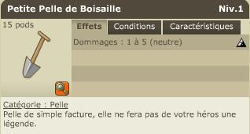

Menu barbok'you

Alignement +11
Il vous demande d'apporter une lettre à Vil Smiss, allez en 10/16 puis parler aux gardes pour entrer et enfin à Vil Smiss. Revenez milice. |
|---|
Alignement +12
Oto vous demande des poisons de scorbute, il faut donc allez dans les landes de sidimote tuer 20 scorbute, vous obtenez 1 poison par scorbute en objet de quete. |
|---|
Alignement +13
Il faut s'infiltrer dans Bonta pour aller parler au garde en -28/-54. Je vous conseille de vous y rendre par la porte droite de Bonta, il y aura un peu moins de gardes. |
|---|
Alignement +14
Parlez à Oto afin qu'il vous dise qu'il n'a rien poour vous. Allez voir Brank Thoof en -26/31 qui vous demandera d'allez demander à Tink Berval en -25/41 de le remplacer. |
|---|
Alignement +15
Oto vous demande de tuer 10 chafers élite, vous en trouverez soit dans le cimetiére à droite de Brakmar soir dans celui à droite de Bonta. |
|---|
Alignement +16
  |
|---|
Il faut tuer un croc gland enragé (level 23), il respawm aléatoirement dans la zone "facade de brakmar", au pire il doit etre trouvable hdv pierre d'ame si vous etes riche et pressé. |
Alignement +17
Droppez ou achetez une fleur de chaque blop puis rendez vouz en -5/-12 par exemple. Concassez les fleurs pour obtenir une bouilli et apportez là à Oto. |
|---|
Alignement +18
Du poison du vrai ! Parlez à Tiamat en -28/33 et retournez voir Oto aprés avoir payé 1000k... |
|---|
Alignement +19
Il faut rapporter à Oto 5 capes brakmariennes, la recette pour une cape est : 1 Os chafer + 1 Laine boufton noir + 1 Teinture magique sombre (10 pattes arakné + 10 ailes moskitos à 1 alchi par teinture), c'est une recette secréte donc le tailleur ne la voit pas, validez quand meme le craft. |
|---|
Alignement +20
  |
|---|
Sucidez vous du côté du cimetière de Brakmar (plusieurs fois si besoin afin de finir en fantome), puis rendez vous, en mode fantome, en -13/38, allez sur les fleurs. Une fois dans le trou allez sur le fantome, vérifiez bien que le message vert s'affiche. Allez ensuite vous ressuciter au phoenix en -14/31. Acheter une petite pelle de boisaille puis allez au phare en 13/-2. EQUIPEZ la pelle pour avoir le message et obtenir le testament, retournez voir Oto. |
Dofus est un MMORPG édité par Ankama." Barbok " est un site non-officiel sans aucun lien avec Ankama.
Toutes les illustrations sont la propriété d'Ankama Studio et de Dofus. Le contenu de ce site a été rédigé initialement par Immortal, il ne s'agit que d'une remise en ligne effectuée par Eternal Games.